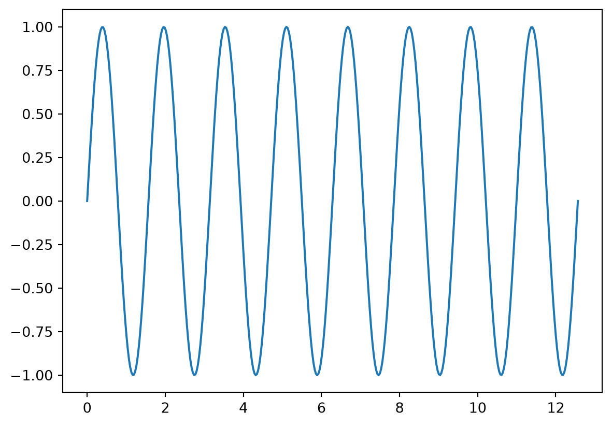

```{python}
import matplotlib.pyplot as plt
import numpy as np
x = np.linspace(0, 4 * np.pi, 400)
```K: Python, panzoom: true with the lightbox
NoteAbout this page
This page tests panzoom: true with the Jupyter engine, next to Quarto’s lightbox: true. The cases are the same as on J, the lightbox-only reference: panzoom should take every image the lightbox takes on J, except where a case asks for the lightbox explicitly. The knitr equivalent is page C.
Keep the cases in step with the other page of the pair. Each heading’s expect-open says what should open. Jupyter leaves the panzoom and lightbox options out of the code shown on the page; the Code button at the top shows the full source.
The cases below share this setup:
1. Figure with a caption
```{python}
#| fig-cap: "A sine wave."
plt.plot(x, np.sin(x))
plt.show()
```
2. Plot without a caption
```{python}
plt.plot(x, np.cos(x))
plt.show()
```
3. Subfigures (fig-subcap, layout-ncol)
```{python}
#| label: fig-pair
#| fig-cap: Two waves.
#| fig-subcap:
#| - Sine
#| - Cosine
#| layout-ncol: 2
plt.plot(x, np.sin(2 * x))
plt.show()
plt.plot(x, np.cos(2 * x))
plt.show()
```

4. Nested lightbox: options
A cell’s own lightbox: options ask for Quarto’s lightbox, so panzoom leaves the cell to it, as with knitr (page C, cases 6 and 7). With Jupyter, Quarto’s lightbox ignores the options themselves: the group and description don’t reach it.
```{python}
plt.plot(x, np.sin(3 * x))
plt.show()
plt.plot(x, np.cos(3 * x))
plt.show()
```

5. lightbox: false
Opted out of the lightbox; panzoom leaves an explicit lightbox setting alone too.
```{python}
plt.plot(x, np.sin(4 * x))
plt.show()
```
6. panzoom: true on a cell
Without the panzoom filter (K) the option means nothing, and the document’s lightbox: true takes the plot.
```{python}
plt.plot(x, np.cos(4 * x))
plt.show()
```
7. Markdown image alone in a paragraph

8. Markdown image with .nolightbox